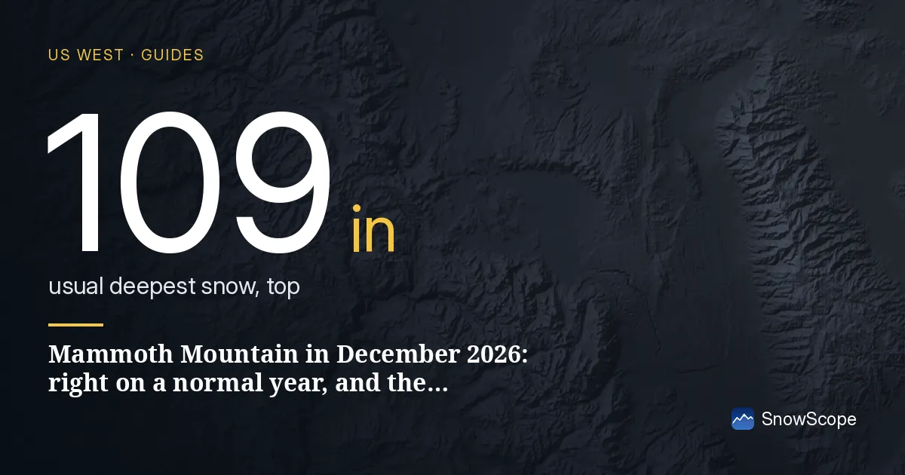
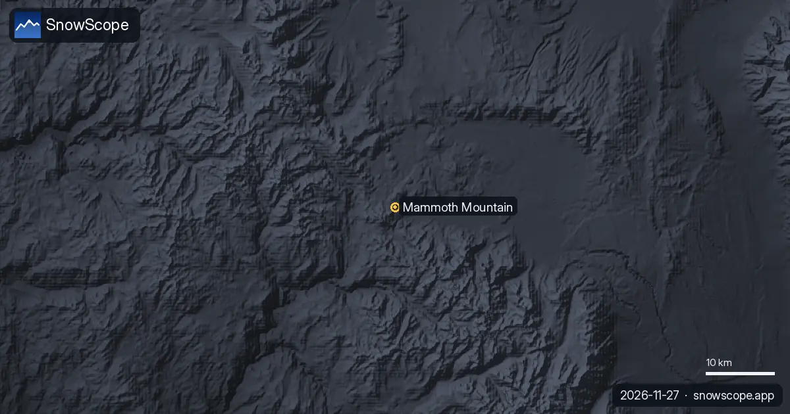
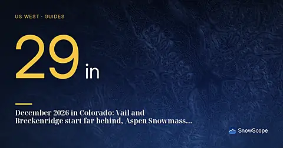

Mammoth Mountain in December 2026: right on a normal year, and the week-by-week snow you can expect
Mammoth goes into December on schedule: 13 in (33 cm) of snow at 9,541 ft (2,908 m), close to the 12 in (30 cm) that is normal for late November, and 19 in (48 cm) on the upper slopes. December is usually when the base doubles, from about 17 in (42 cm) on December 1 to 37 in (93 cm) on Christmas Day, so the month ahead decides how the holidays look.
See the live snow forecast for Mammoth Mountain in the SnowScope appSnow depth, powder alerts and the 3D map, free.

Week 1 (Dec. 1-7): small steps
The first week of December usually adds little at Mammoth; the normal depth at 9,541 ft (2,908 m) goes from 17 in (42 cm) to 20 in (52 cm). This year the next three days bring about 2 in (4 cm), and the seven-day forecast reaches 11 in (28 cm) at the summit, most of it after Monday.
Week 2 (Dec. 8-15): the first real build
By mid-December a normal winter has 29 in (73 cm) at 9,541 ft (2,908 m). Mammoth's big December storms tend to come in a few strong pulses from the Pacific, and a single one can add more than the whole first week. A 50 cm (20 in) base by December 15 was reached in 63% of 46 winters.
Weeks 3 and 4: Christmas
On December 25 the usual depth is 37 in (93 cm). The range is wide, as everywhere in the Sierra: one Christmas in four had less than 17 in (42 cm), one in four more than 4.6 ft (140 cm). By January 1 a 50 cm base had been reached in 76% of winters, with a usual 39 in (100 cm) on New Year's Day.
This year against the calendar
The upper mountain has 19 in (48 cm) today, and the mid-mountain 13 in (33 cm), which is close to the usual 12 in (30 cm) for November 27. Mammoth's mid-November storm did most of that work, and the snow has held through a dry week thanks to the cold, high terrain.
Over the coming seven days our forecast adds 11 in (28 cm) at the summit and 10 in (26 cm) at mid-mountain. That would keep Mammoth on or slightly above its normal path into the second week of December.
For skiers, the calendar gives a simple rule of thumb: the first week of December is for the groomers, the middle of the month for most of the mountain, and Christmas for the full summit if the storms come on time.
Big years and lean years
The deepest winter on our record was 2022-23, which peaked at 17.9 ft (547 cm); the leanest, 2014-15, reached only 34 in (87 cm). Mammoth's high summit, at 11,024 ft (3,360 m), keeps skiing even in poor years, which is why it is one of the longest seasons in North America.
Follow the base, mid-mountain and summit numbers every day on the Mammoth Mountain snow page.
Lean years are rarer than the bad headlines suggest: in 63% of winters the mountain already had a 50 cm (20 in) base by mid-December. The years that miss tend to be those where the November storms failed, which is not the case this season. If you are choosing between Mammoth and the Tahoe resorts for an early trip, Mammoth's higher terrain is the safer pick in a dry spell, and Tahoe's deeper start is the better pick if storms keep coming.
Tips for skiers
- Early December: stay on the main lodge side and the upper groomers; Chair 23 and the steepest summit terrain need a deeper base.
- Mid-December onward is the better bet for a full-mountain trip; Christmas week is the busiest of the year.
- The Eastern Sierra highway from Southern California is the reliable winter route; carry chains during storms, when California chain controls are common.
- Compare other Sierra resorts on the US West snow hub; plan dates with the trip planner.
About these numbers
Snow numbers: SnowScope's snow map and forecast for today, and our record of 46 past winters at each resort (an estimate for the area, not the resort's own report).
Official avalanche bulletins: avalanche.org (US national portal)
Cite this report
For research, teaching or the press: the numbers and charts are free to reuse under CC BY 4.0 with this citation.
SnowScope (2026), Mammoth Mountain in December 2026: right on a normal year, and the week-by-week snow you can expect, https://snowscope.app/blog/en/2026/11/mammoth-mountain-december-2026-snow-what-to-expect-week-by-week.html, accessed 2026-11-27
SnowScope (Atlas Labs). (2026, November 27). Mammoth Mountain in December 2026: right on a normal year, and the week-by-week snow you can expect. SnowScope snow reports. https://snowscope.app/blog/en/2026/11/mammoth-mountain-december-2026-snow-what-to-expect-week-by-week.html
BibTeX
@misc{snowscope2026mammothmountaindecember2,
author = {{SnowScope (Atlas Labs)}},
title = {Mammoth Mountain in December 2026: right on a normal year, and the week-by-week snow you can expect},
year = {2026},
month = nov,
howpublished = {\url{https://snowscope.app/blog/en/2026/11/mammoth-mountain-december-2026-snow-what-to-expect-week-by-week.html}},
note = {Published 2026-11-27 21:54 UTC; accessed 2026-11-27}
}· CC BY 4.0 · Methods, data and tools →
Mammoth Mountain: snow and temperature by height, this winter vs last (tools) →
Follow Mammoth Mountain
Free: a message when fresh snow is coming, and the forecast every morning.
More snow reports

Mt. Hood shows how much a few hundred feet matter: today's snow at Timberline, Meadows, Skibowl and Mt. Bachelor, the next three days, and what December usually brings.

Tahoe's resorts are far ahead of a normal year after the mid-November storms. Christmas odds for Kirkwood, Sugar Bowl, Palisades, Heavenly and Northstar.

Colorado's big resorts go into December with a thin base. How far behind each one is, what a normal December adds, and where to go first.